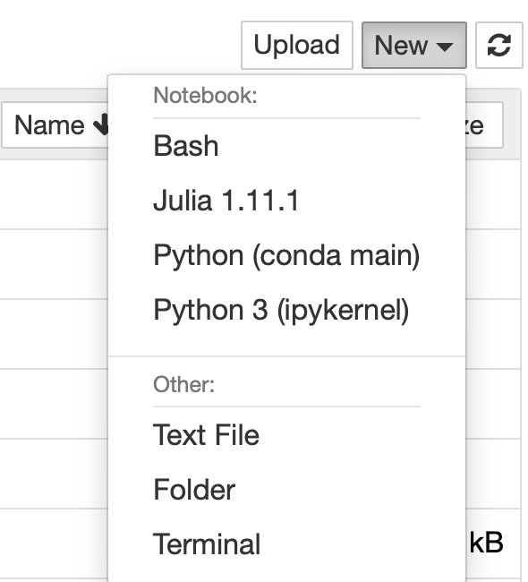

Installation
MCMRSimulator is an application written in the Julia language. You can run simulations either directly from the Julia REPL, in a Jupyter notebook, or using the command line interface.
Installing the simulator for a specific project
- First install julia from the official website.
- Create a directory for the project for which you are going to use the simulator. We will install MCMRSimulator in isolation just for this project. This ensures that if we install a newer version of the simulator for another project in the future, it will not interfere with the reproducibility of the results of this project. We will refer to this newly created project directory below as "<project_dir>".
- Start the julia REPL in a terminal (
$ julia --project=<project_dir>). The--projectflag ensures that we create and activate a Julia environemnt just for this project. This will create a "Project.toml" and "Manifest.toml" inside the directory specifying the installed packages (such as the MCMR simulator). - Enter the package manager by pressing "]"
- First install the required MRIBuilder.jl using
pkg> add https://git.fmrib.ox.ac.uk/ndcn0236/mribuilder.jl.git. - Then install MCMRSimulator.jl using
pkg> add https://git.fmrib.ox.ac.uk/ndcn0236/mcmrsimulator.jl.git. - (Optional) Install one of the Makie backends for plotting (e.g.,
pkg> add CairoMakie). - (Optional) If you want to use a Jupyter notebook for this project, you will also have to install an
IJuliakernel. You can find instructions to do so below. - Press "[backspace]" to leave the package manager.
- First install the required MRIBuilder.jl using
- (Optional) To install the MCMRSimulator command line interface (CLI) run the following in the main julia REPL:
using MCMRSimulator; MCMRSimulator.install_cli(destdir="..."), wheredestdiris the target directory for the executable (calledmcmrby default). Ensure that thedestdiris a directory that is in your PATH variable.
Running MCMRSimulator
After this installation process, you can run MCMRSimulator in one of the following ways:
- Julia REPL: Start the REPL in a terminal by typing
$ julia --project=<project_dir>. Afterwards typeusing MCMRSimulatorto import the simulator. You can now follow the steps in the MCMRSimulator tutorial using Julia. - Jupyter notebook: Make sure that you install
IJuliausing the instructions below. This will allow you to start a notebook in jupyter running in Julia. Within this notebook, you can follow the steps in the MCMRSimulator tutorial using Julia. - Command line interface: If you followed the instructions in step 4 above, you can run the MCMRSimulator command line interface simply by typing
mcmrin the terminal. If it is not working, you might want to redo step 4 above and pay attention to any warning messages. With this alias set up, you can now follow the command line tutorial.
Updating MCMRSimulator
First check the CHANGELOG to find a list of changes since your current version. If you decide to update:
- Start the julia REPL again in a terminal (
$ julia --project=<project_dir>) - Enter the package manager by pressing "]"
- Update all installed packages using by typing
updateand pressing enter (pkg> update).
Sharing your MCMRSimulator installation
To share the exact environment used by your installation of MCMRSimulator, simply go to the <project_dir> directory and locate the files named "Project.toml" and "Manifest.toml". Transfer these files to any other computer, to ensure that they install the exact same version of all Julia packages used (see https://pkgdocs.julialang.org/v1/environments/ for more details).
Running MCMRSimulator in a Jupyter notebook
Installing the Julia kernel
You only have to run the following once:
julia -e "import Pkg; Pkg.add(\"IJulia\"); Pkg.build(\"IJulia\")" This line installs and builds IJulia in the main, global environment. This will create a new jupyter kernel just for Julia. This global environment is available within any local environments, so we only have to do this once across any number of Julia projects.
To test whether this has worked, start a Jupyter notebook (or Jupyter lab). If you have FSL installed, you can do so using fslpython -m notebook. Within the Jupyter notebook interface press "New". The Julia kernel should show up here with its version number. 
Using the simulator with this Julia kernel
If you followed the steps in the previous section, the Julia kernel will be installed in its own environment separate from the simulator. To use the simulator using this kernel, we simply start a notebook and then switch to an environment that has the MCMR simulator installed (i.e., created as described above). You can do this by including a block at the top of the notebook with the following code:
import Pkg
Pkg.activate("<project dir>")where "<project_dir>" is the directory where we installed the simulator.